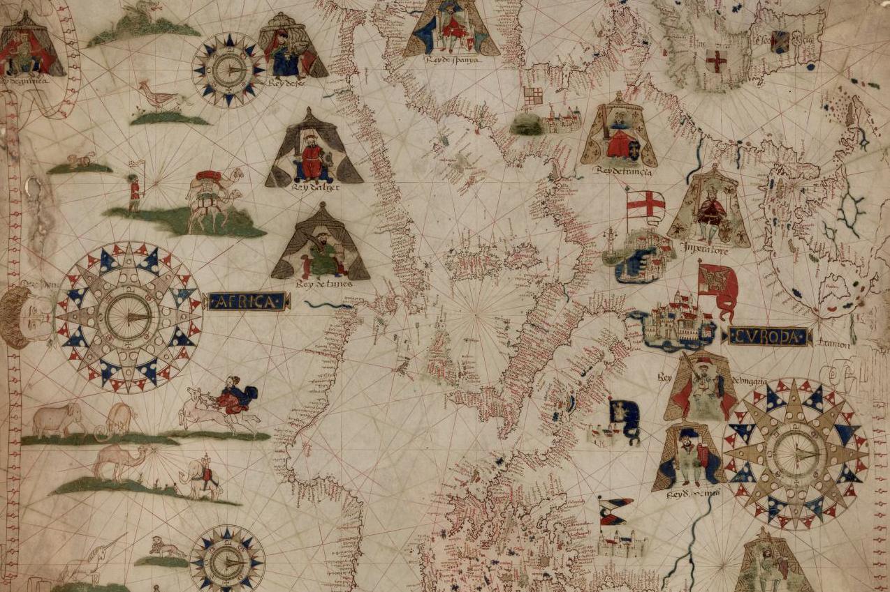

ARTHIST 322 / MENA 390
The course integrates class lectures with hands-on sessions and workshops. Students engage with spatial thinking and digital tools through ArcGIS StoryMaps as part of the Digital Mediterranean project, gaining skills in mapping artistic exchange.
A visit to the library’s Map Room will offer hands-on experience with medieval and early modern maps to explore how the Mediterranean was represented and navigated, while a Block Museum study session focused on Shahnameh folios will provide a close analysis of artistic techniques in Persian illustrated manuscripts.
This hands-on session, held in collaboration with Special Collections and the GIS department, introduces students to medieval and early modern maps and spatial analysis methods to support their understanding of the visual representations of the Mediterranean world and help them to start their final assignments for the Digital Mediterranean project.